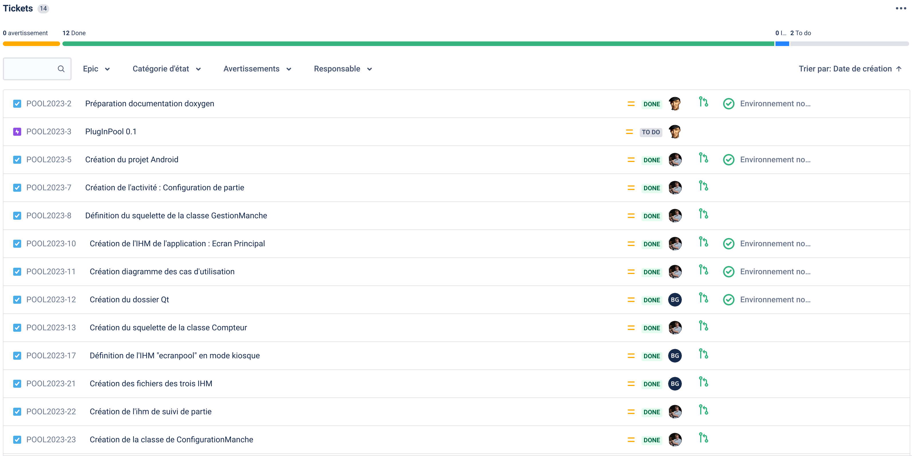
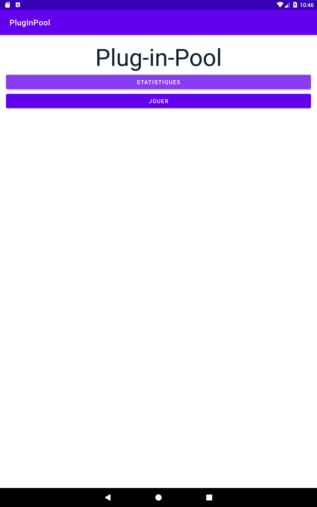
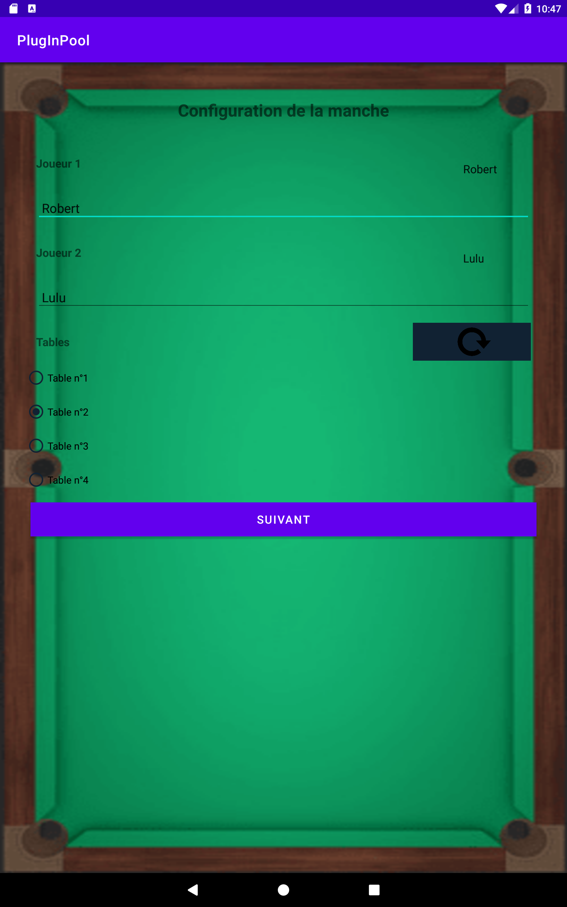
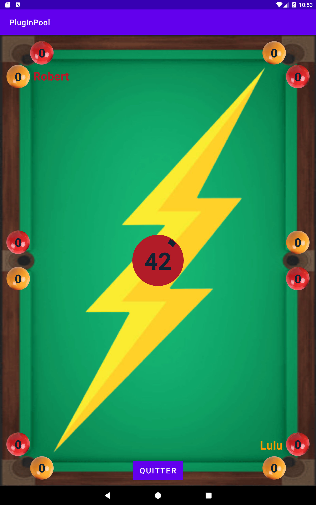
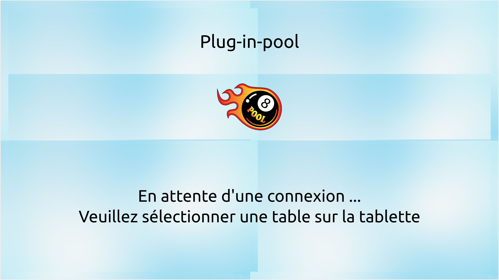

|
Projet plug-in-pool
0.1
BTS SNIR LaSalle Avignon 2023
|
|
Projet plug-in-pool
0.1
BTS SNIR LaSalle Avignon 2023
|


Le système Plug in Pool est un système numérique permettant de jouer une partie de Blackball (parfois appelé billard anglais, billard pool ou 8 pool).
Le système Plug-in-Pool est décomposé en trois modules :
https://btssn-lasalle-84.github.io/plug-in-pool-2023/
| Fonctionnalité | Oui | Non |
|---|---|---|
| Configurer une manche | X | |
| Jouer une manche et afficher son déroulement | X | |
| Enregistrer les données de jeu | X | |
| Afficher les statistiques des manches effectuées | X | |
| Communiquer entre les modules | X |





Le Blackball ou 8 pool, est un jeu de billard à deux joueurs, qui se déroule sur une table rectangulaire à poches avec 14 billes de couleur (7 rouges et 7 jaunes), une bille noire et une bille d'impact blanche. Les joueurs jouent uniquement les billes de leur groupe : les jaunes ou les rouges. Si un joueur empoche une de ses billes, il est autorisé à rejouer. La partie est gagnée par le joueur qui, après avoir empoché les 7 billes de sa couleur, empoche la bille noire.
Les billes sont rassemblées en triangle et disposées de manière prédéfinie (motif "en J"). La noire doit se trouver placée (sur la mouche) à l’intersection des 2 diagonales entre les poches du bas et celles du milieu (côté opposé à celui du rectangle de départ).
La casse est considérée valide si une bille de couleur est empochée, ou si deux billes ou plus traversent la ligne corde centrale (ligne virtuelle reliant les deux poches centrales). Le cas échéant, ou si la blanche est empochée, le triangle est reformée, et la casse est effectuée par le second joueur. Si la bille noire est empochée, le triangle est reformé sans faute et le joueur casse une nouvelle fois.
La couleur des billes est déterminée par la première bille empochée, si deux billes sont empochées en même temps, de couleurs différentes, le joueur rejoue sans que la couleur des billes de son groupe soit déterminée.
Lorsque le joueur commet une des fautes suivantes, le joueur adverse dispose de deux coups :
Le joueur gagne dans le cas où après avoir empoché l'ensemble des billes de son groupe de couleur, il empoche la noire ou si son adversaire après avoir empoché la noire sans avoir empoché la totalité des billes de son groupe de couleur.
©️ LaSalle Avignon